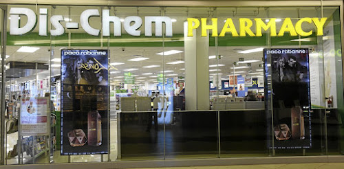
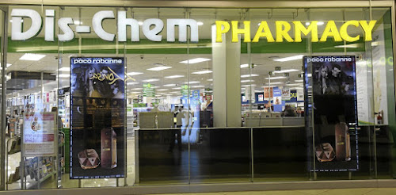

logo.png) 


DISCHEM
Dis-Chem has private label products, sells via the Internet, operates a loyalty programme, and the Group has a wholesale division. The chain announced in 2016 its plans to double the number of outlets through 2021. At that time, one-third of its outlets were less than three years old.
n 2014, Dis-Chem opened its first store outside South Africa, in Windhoek, Namibia. In November 2016, Dis-Chem Pharmacies Limited group listed 27.5% of its listed share capital on the Johannesburg Stock Exchange. It was the second-largest IPO in the exchange's history.
Dis-Chem started in 1978 when pharmacists Ivan and Lynette Saltzman, opened their first retail pharmacy in Mondeor, a southern suburb of Johannesburg. They introduced the concept of a discount pharmacy with product categories that until then, had not been offered in South African pharmacies because of prohibiting legislation.